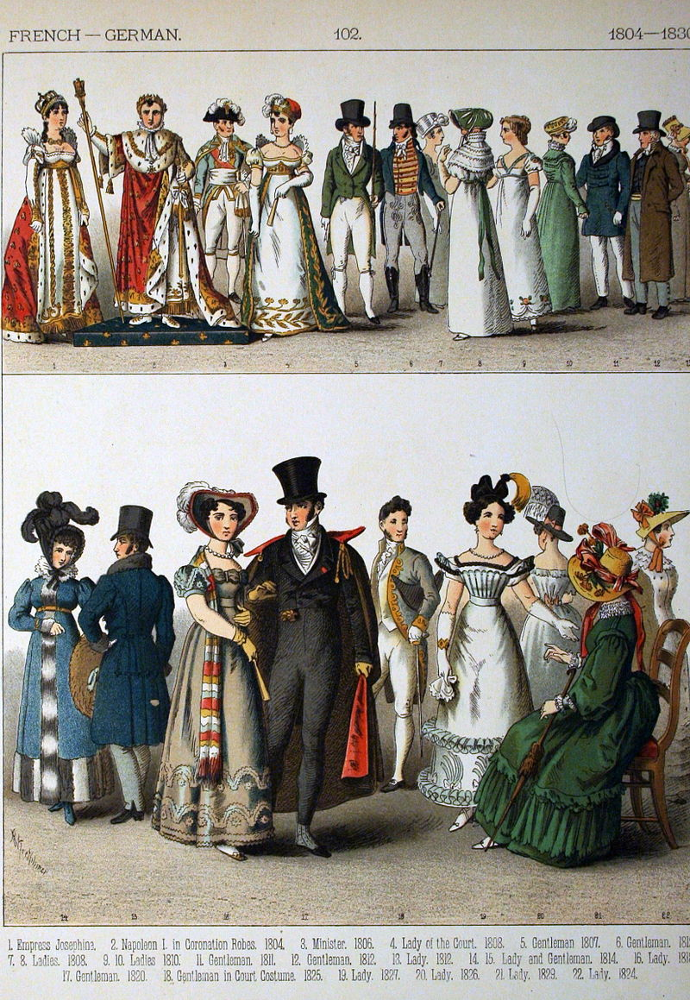
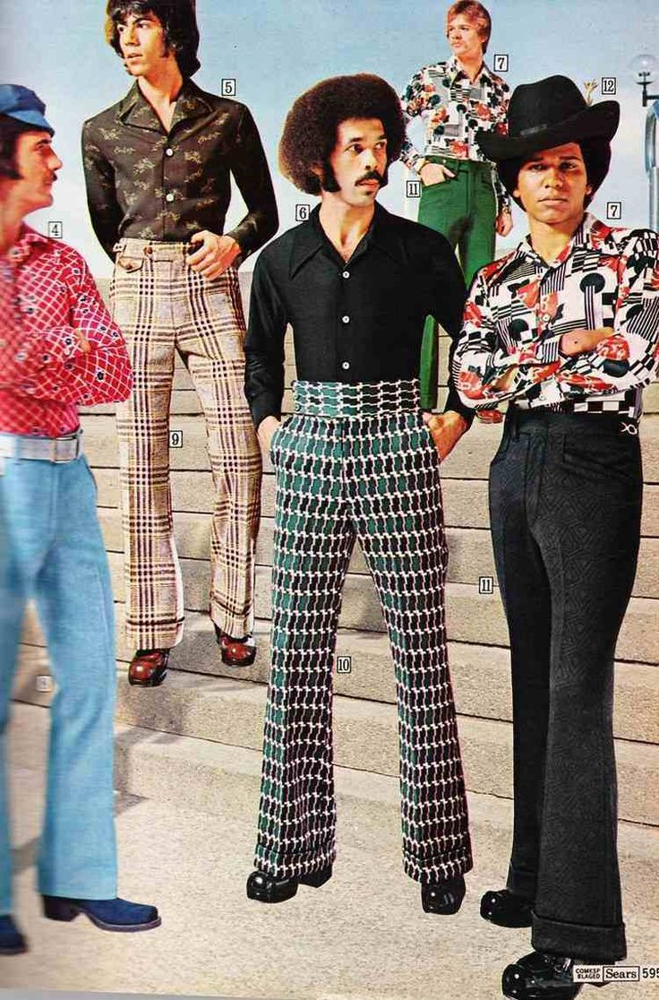
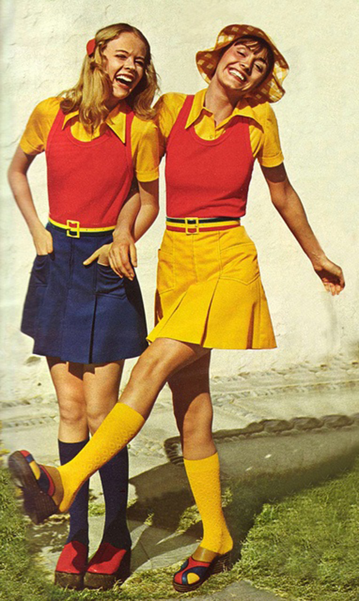

La mode existe depuis très longtemps, en effet depuis l'Antiquité.

Mais la mode à évoluer progressivement et heuresement. D'années en années cela évolue et change.
Voici la mode vestimentaire des années 70 :
 
Dire que ces tenues vestimentaires, ces coiffures , ces chaussures, ces accessoires étaient à la mode. Aujourd'hui
on les porte pour le canarval ou lors d'une soirée déguisé. :')
Néanmoins les tendances de mode des anciens époques font souvent des retours majeur dans la mode d'aujourd'hui.
Mais je vous conseille franchement d'aller sur le page suivante, car vous allez découvrir la véritable mode de la jeunesse
d'aujourd'hui et les secrets de ces inspirations.